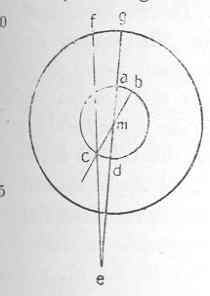

Kant: AA XIV, Mathematik , Seite 037 |
|||||||
Zeile:
|
Text:
|
|
|
||||
| 01 | Dieses kan nun nicht bewiesen werden, sondern es ist der Begrif von | ||||||
| 02 | einer bestimten Weite oder der einen Linie von der andern überhaupt | ||||||
| 03 | und gilt also von beyden Linien ganz, d. i. so groß sie auch seyen. | ||||||
| 04 | (Lagen können von zweyen Linien bestimt seyn, unerachtet keine Linie | ||||||
| 05 | von der andern eine bestimte Weite hat. Die Lage kommt auf die Proportion | ||||||
| 06 | der perpendiculären an, wenn die Linien in einer und derselben | ||||||
| 07 | Fläche liegen. | ||||||
| 08 | Wenn die Linien in einem Punct zusammen stoßen, so schlißen sie | ||||||
| 09 | in ihrer Lage einen Winkel ein, und diese Lage kan denn zwar durch einen | ||||||
| 10 |  |
Bogen der Bewegung der einen über der andern gemessen | |||||
| 11 | werden; dieser drükt aber nicht eigentlich die | ||||||
| 12 | Lage aus, welche in dem Verhaltnis der entweder | ||||||
| 13 | der Gleichheit der Entfernung beyder in ihrer beyderseitigen | ||||||
| 14 | ganzen Lage oder der Annäherung auf einer | ||||||
| 15 | und der Entfernung derselben von einander auf der | ||||||
| 16 | andern Seite besteht. Vielleicht ist dies ein Satz für | ||||||
| 17 | die Geometrie der Lagen. | ||||||
| [ Seite 036 ] [ Seite 038 ] [ Inhaltsverzeichnis ] |
|||||||
;){kind=link}